Verktøy for kjøkken og barnehager som vil vite hva som serveres, hva det inneholder og hva det koster. Alle appene kan prøves her på siden.
Matplan som passer alle barna
Bare Barnemat er kalenderen der du planlegger månedens måltider. Dra rettene inn på dagene. Appen sier fra når en rett ikke passer for et barn med allergi eller spesialkost, og viser hva måneden koster.
Demoen starter med en ferdig plan, og du slipper å logge inn. Appen er under utvikling. Vil din barnehage teste den, send oss en e-post.
Dette kan du
- Planlegge to uker om gangen, med rettene fargekodet etter type
- Få varsel når en rett ikke passer for et barn med allergi eller kosthold
- Se budsjett og kostnad per barn, og skjule tallene med ett trykk
- Bestille for en valgfri periode
- Bruke ukespakker og matboks
- Eksportere ferdig månedsmeny
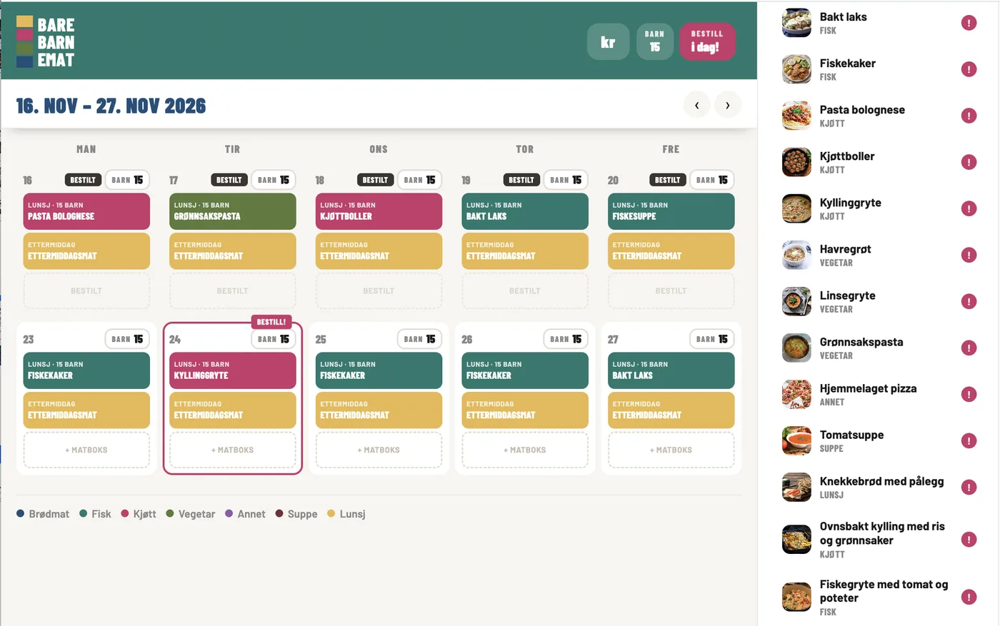


Vet hva hver rett koster, og hva den gir
Auto·Mat regner ut varekost, påslag og margin for hver rett. Bestilling, svinn og allergener ligger i samme app. Laget for proffkjøkken, kafeer og serveringssteder.
Demoen har eksempeldata fra et kjøkken, så du ser alle verktøyene i bruk. Det du legger inn lagres bare i din nettleser.
Dette kan du
- Se varekost per rett, med pris inne og take away
- Lage handleliste ut fra retter og antall porsjoner
- Registrere svinn og stemme det av mot regnskapet
- Følge fortjenesten måned for måned, og se hvilke retter som gir mest
- Skrive ut allergenkort til disken og allergenliste til de ansatte
- Lage menyen som plakat, i Word eller PDF
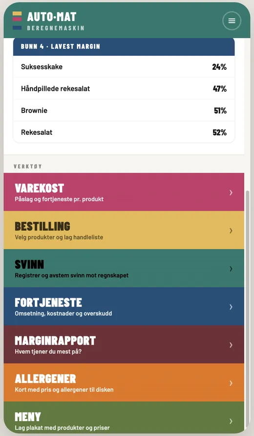
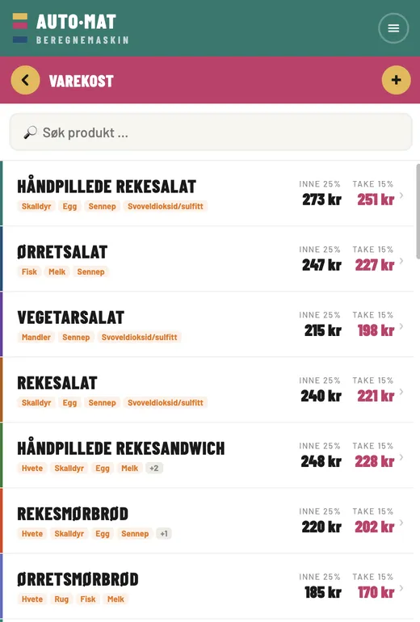
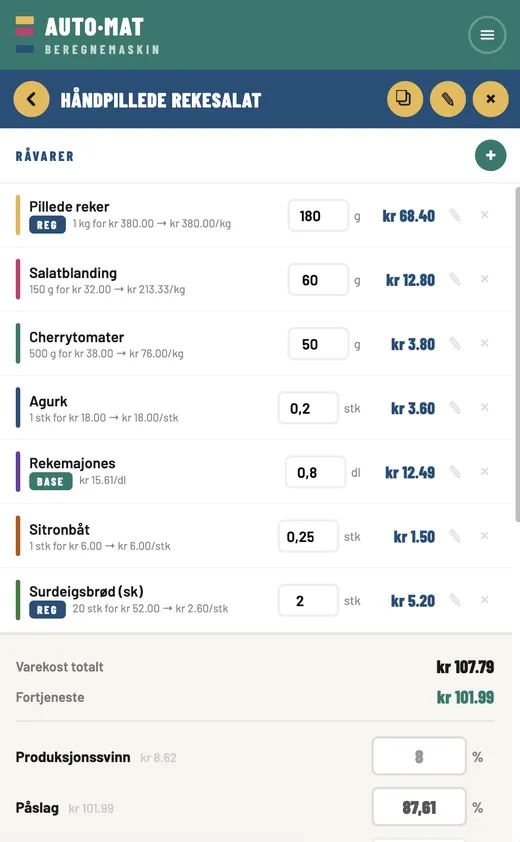
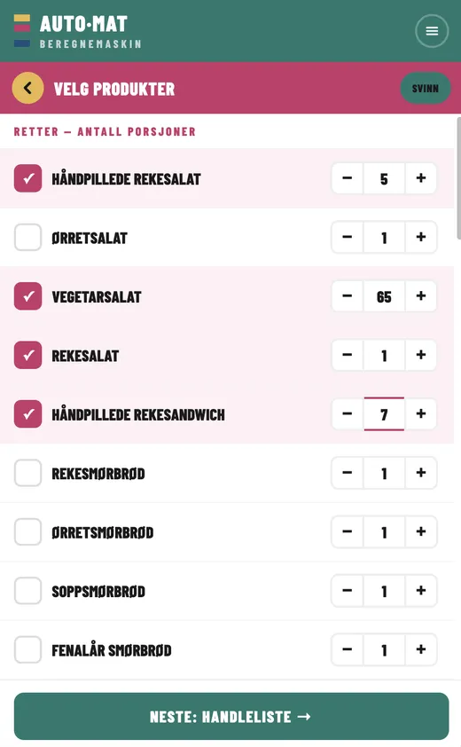
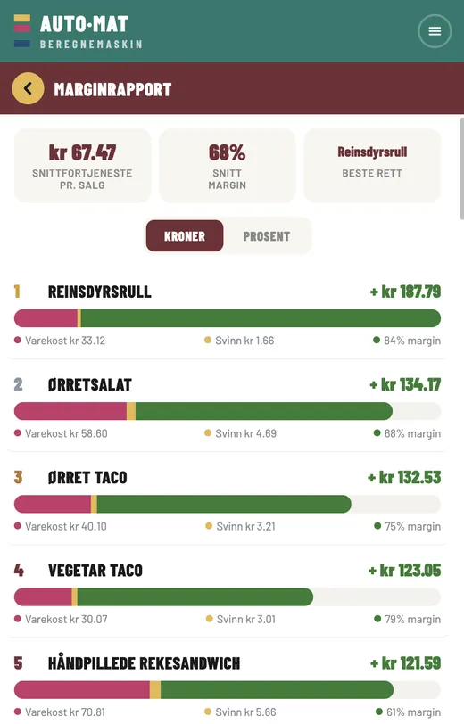
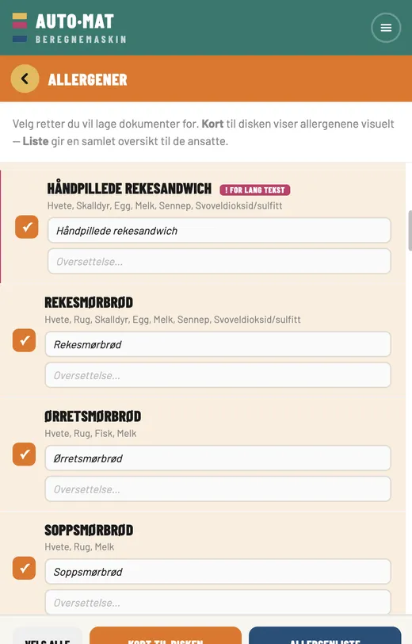
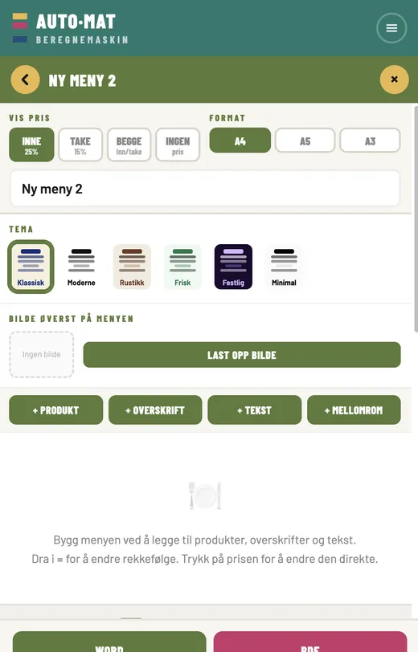
Øv til prøvene
Les pensum, ta quiz per tema og få forklaring på hvert svar. Når du er klar, tar du full eksamen. Fremgangen din lagres i nettleseren.
QuizzMeg Skjenkeprøven
Et hjelpemiddel for å bestå skjenkeprøven. Over 100 spørsmål fordelt på seks temaer: salg, bevilling, skjenketider, kunde, internkontroll og reklame.
I demoen er ett tema åpent. Resten og eksamen får du i fullversjonen.
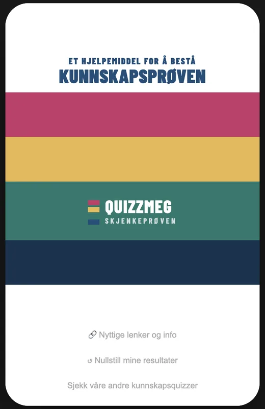
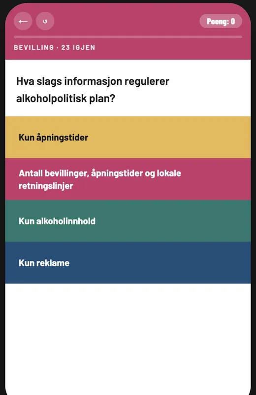
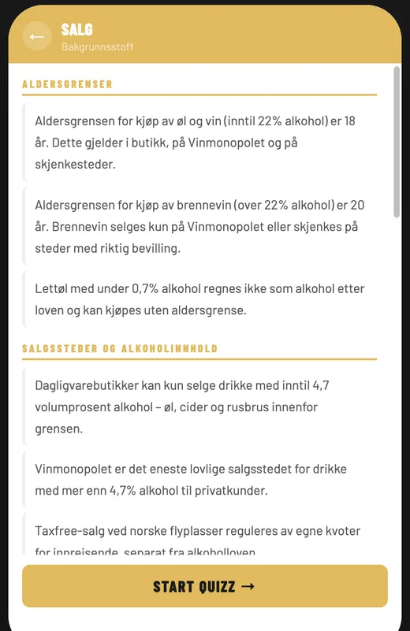
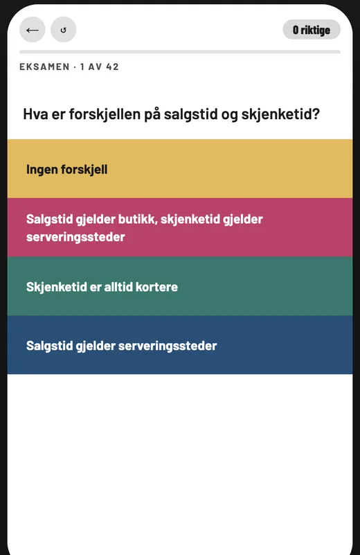
QuizzMeg Etablererprøven
Et hjelpemiddel for å bestå etablererprøven. Over 70 spørsmål fordelt på ni temaer: alkoholloven, bevilling, salg og skjenking, tider, kontroll, sanksjoner, internkontroll, avgifter og ansvar.
I demoen er ett tema åpent. Resten og eksamen får du i fullversjonen.
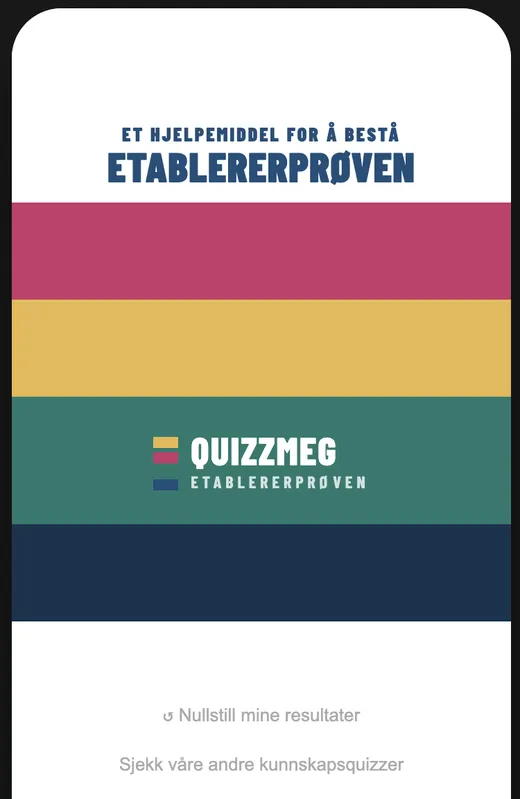
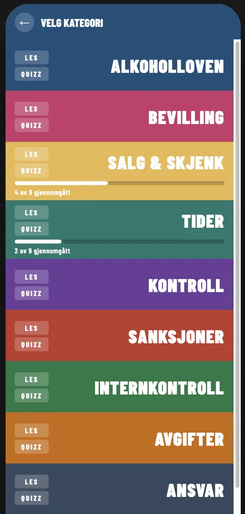
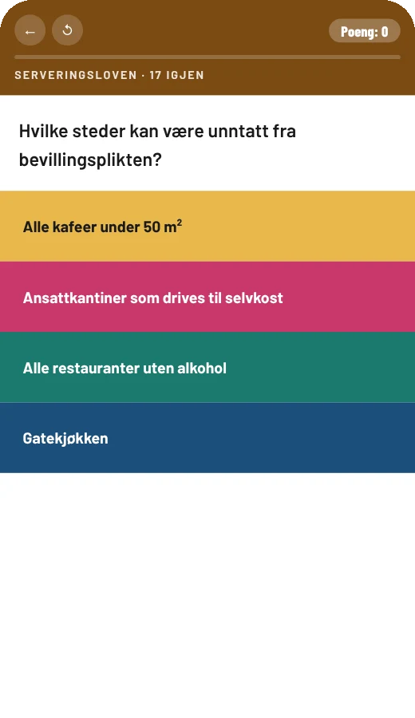
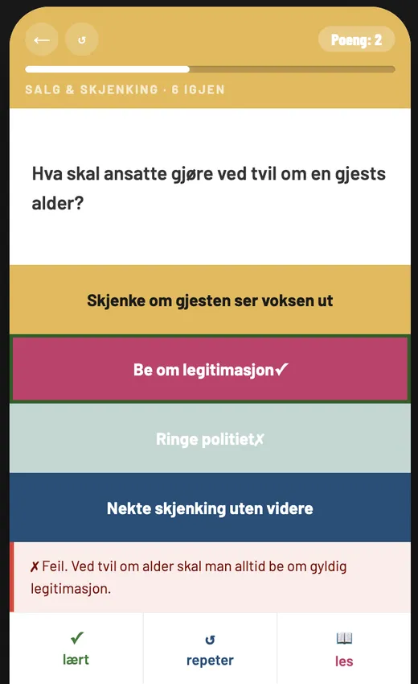
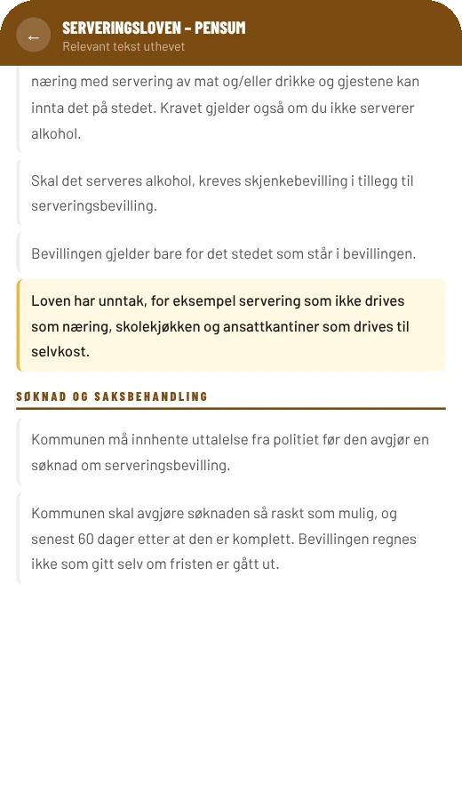
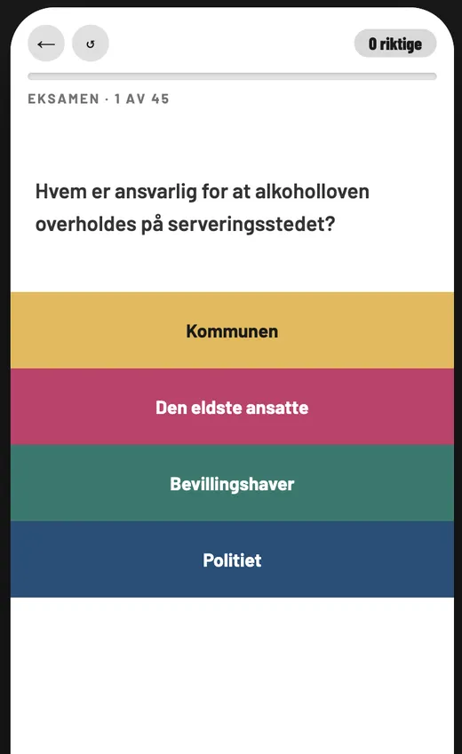
Nå ut til kjøkken som planlegger
Er du grossist eller produsent og vil at varene dine skal finnes der menyene lages? Ta kontakt, så forteller vi hva som er mulig.
Si fra
Vil du ha Bare Barnemat i barnehagen, Auto·Mat på kjøkkenet eller en av quizappene? Eller har du spørsmål? Send oss en e-post.
post@spisbart.no